På studiet lærer du at arbejde gennem forskellige grafiske processer samt at programmere hjemmesider. Nedenfor kan du se tre forskellige arbejdsprocesser for opbyggelse af en hjemmeside. Dette vil være en typisk opgave for både individuelle og gruppeprojekter samt eksamens projekter.
Du skal vælge at gå på Erhvervsakademiet, fordi du er en kreativ sjæl. Du behøver ikke være god til at tegne, eller kende alle programmerne inden. Du lærer det hele undervejs. Så længe du har gåpåmod og er klar på at lære en masse nyt, så er det bare med at få sendt en ansøgning afsted.
På erhvervsakademiet har du en fast klasse som du følges med de to første semestre. På tredje semester vælger du retning, hvor klasserne derfor bliver slået sammen. På 4 og sidste semester kommer du i praktik hvor du har mulighed for at udvikle og udfordre dig selv.
Der bliver arrangeret sociale arrangementer på skolen gennem hele din studietid, for at styrke det sociale bånd. Både i klasserne men også imellem de studerende.